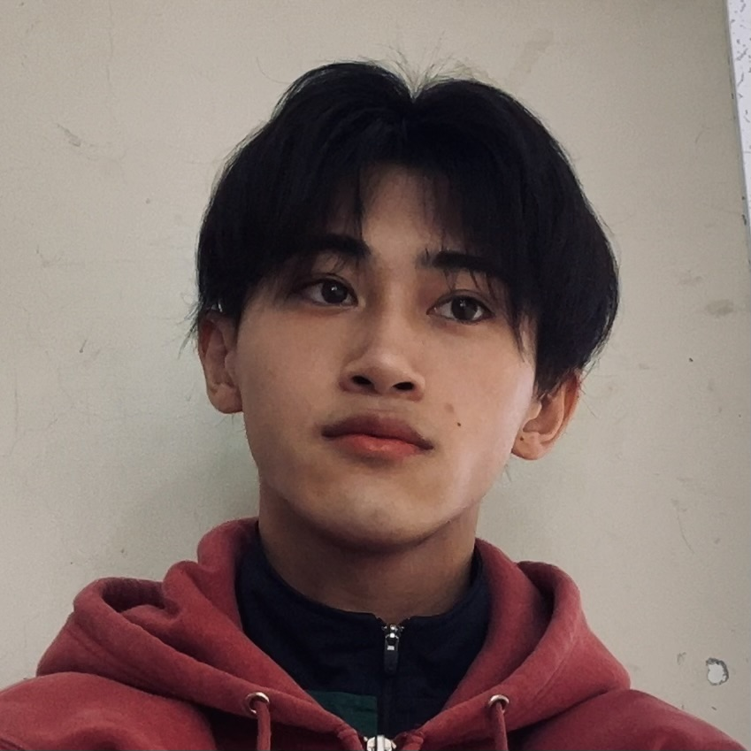

アーティスト / 音楽制作
RYK!LE.
音楽と言葉で、自分だけの表現を。
RYK!LEの公式リンクページへようこそ。
INDEPENDENT ARTIST · JAPAN

RYK!LE
ABOUT
RYK!LE
RYK!LEは、音楽・言葉・ビジュアルを通して自分の感覚を表現するアーティスト。ジャンルに縛られず、自分らしい音と世界観を追求している。
楽曲の詳細や作品情報は、Artistサイトでチェック。
音楽と言葉で、自分だけの表現を。
RYK!LEの公式リンクページへようこそ。

RYK!LEは、音楽・言葉・ビジュアルを通して自分の感覚を表現するアーティスト。ジャンルに縛られず、自分らしい音と世界観を追求している。
楽曲の詳細や作品情報は、Artistサイトでチェック。